大アルカナの意味一覧（22枚）
大アルカナは「愚者」から「世界」までの22枚で、タロットの物語の骨格にあたるカードです。
旅立ち、学び、試練、喪失、再生、完成という人生の大きな流れが、一枚ずつ象徴として描かれています。
日々の出来事よりも、価値観や生き方の向きそのものに関わる問いを映しやすいのが特徴です。
決断の場面で大アルカナが出たときは、目の前の損得だけでなく「この選択は自分がどんな人でありたいかとつながっているか」を考える手がかりになります。
番号順に読むと、ひとつの成長の物語として前後のカードの意味もつながって見えてきます。
0番の「愚者」は何も持たずに一歩を踏み出す存在で、残りの21枚はその旅で出会う人物や出来事、心の状態だと考えると覚えやすくなります。
迷いが深いときほど、一枚の意味だけでなく流れの中での位置を見てみてください。
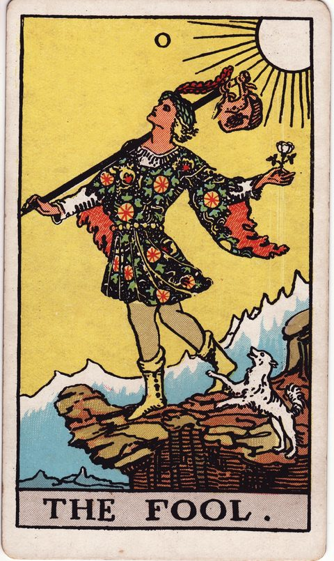
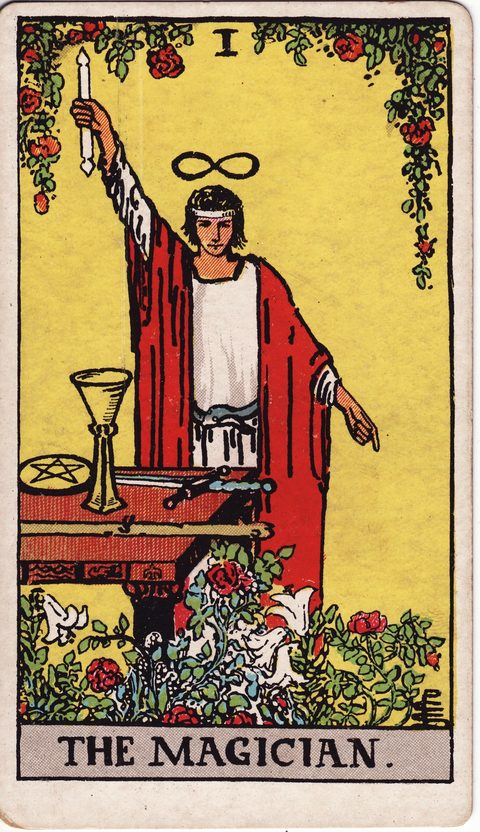
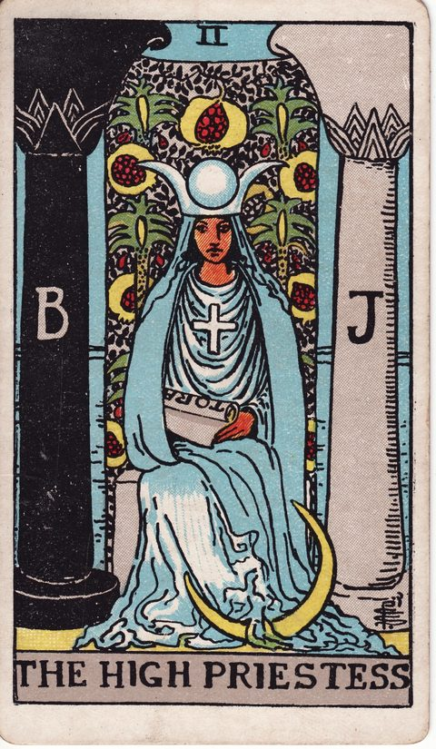
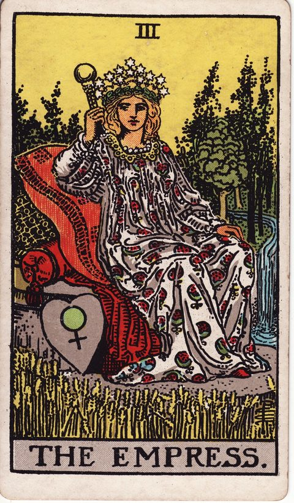
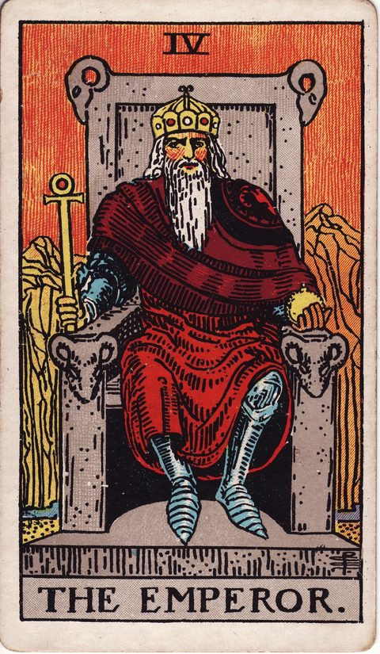
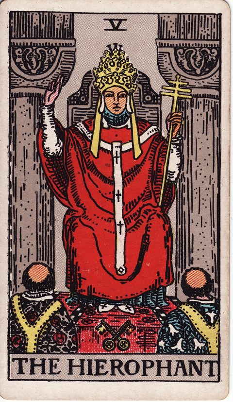

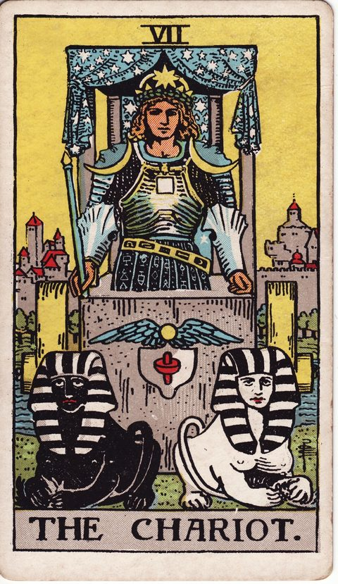
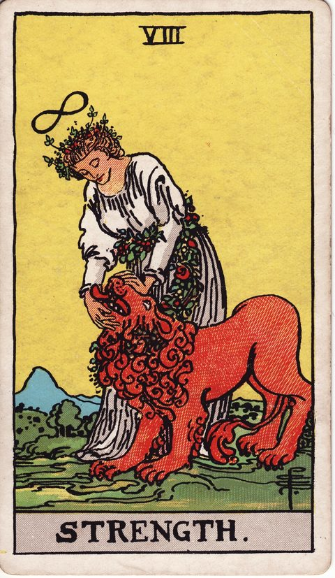
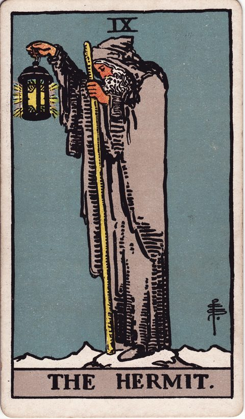
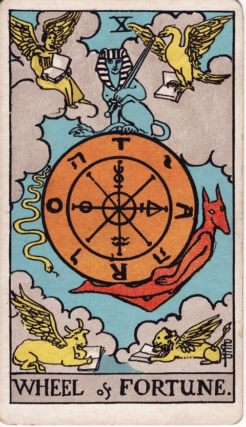
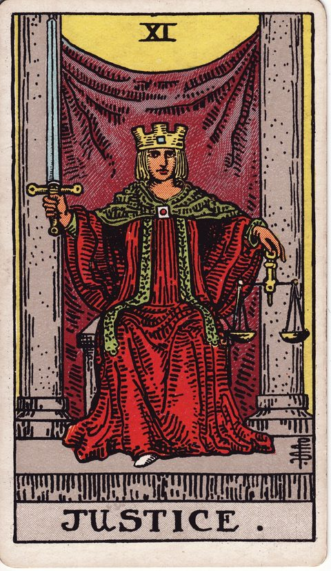
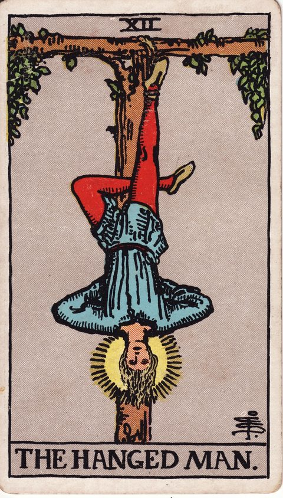

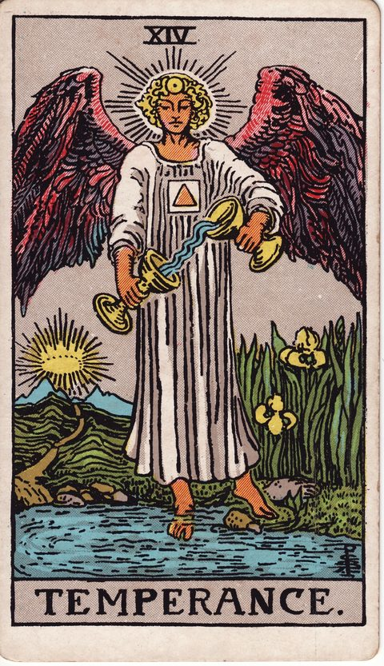
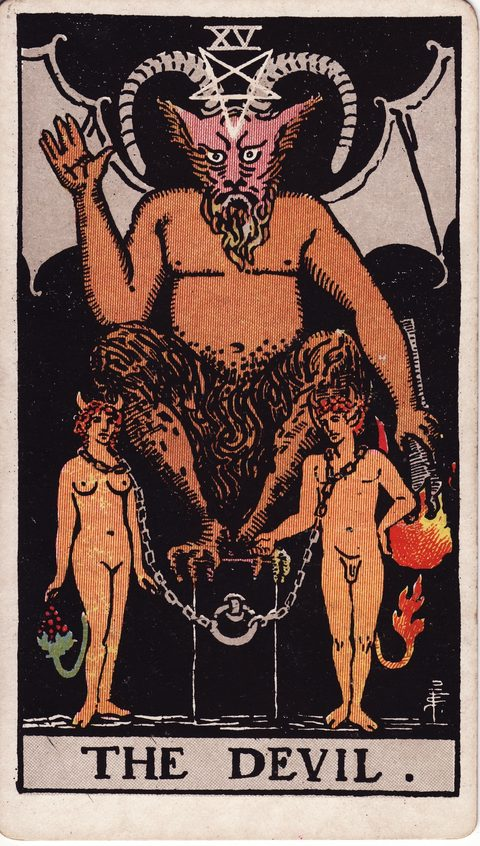
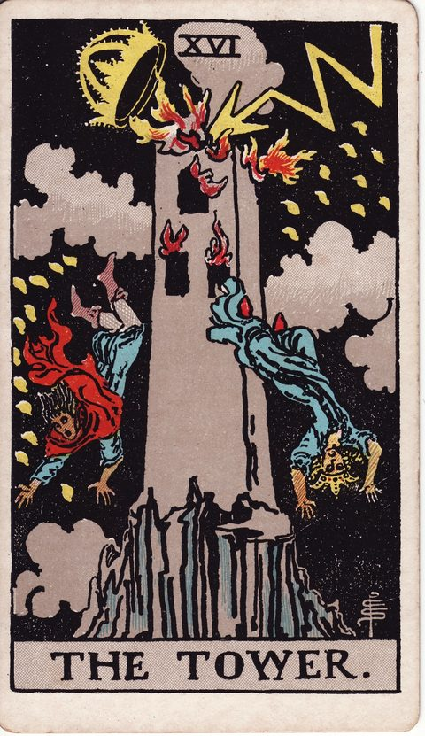
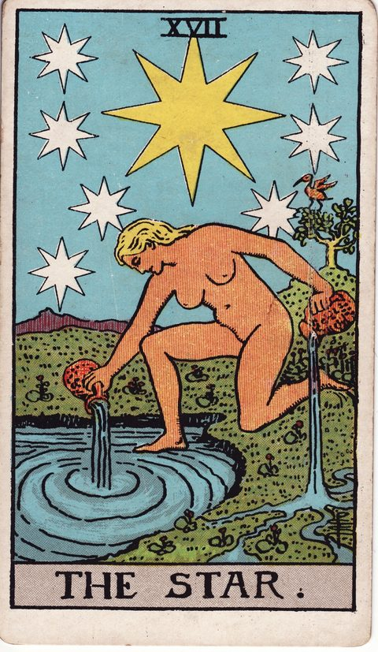
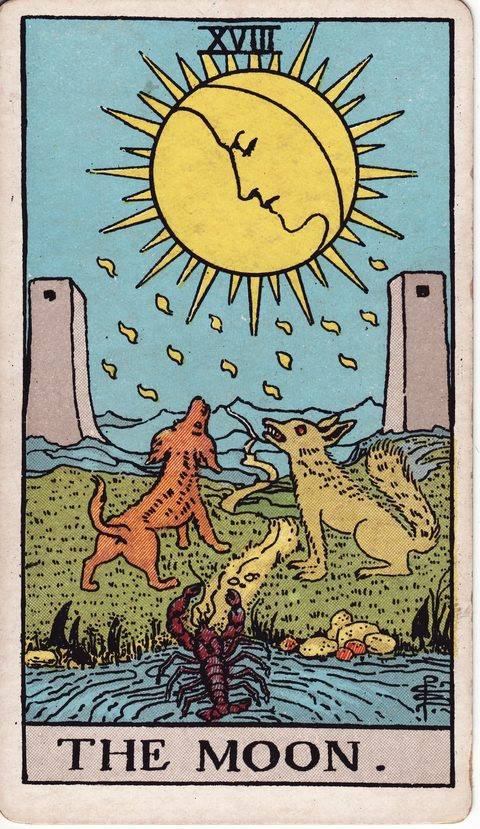
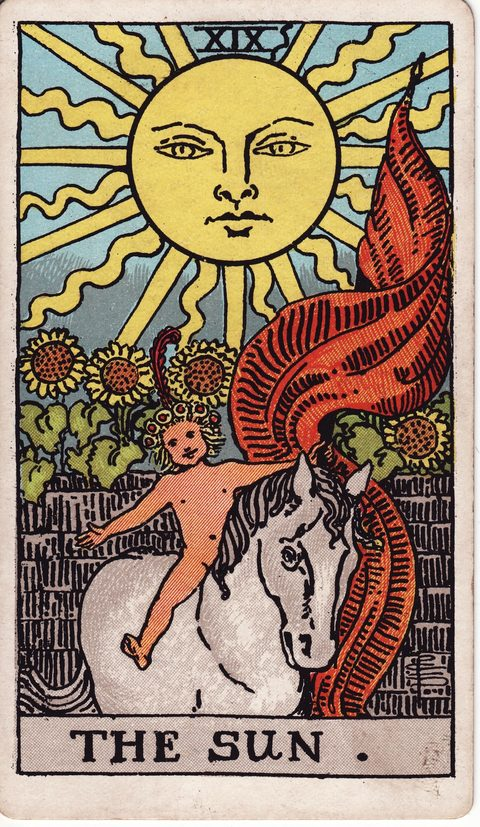

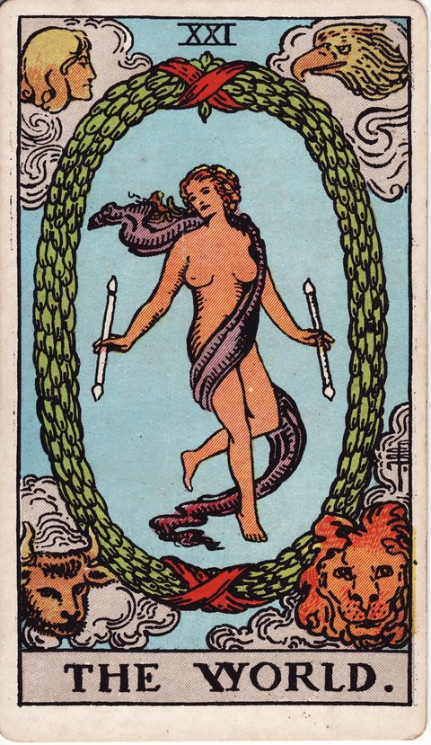


大アルカナの視点を、いまの選択肢に当てはめてみる
今抱えている迷いを、このカードの視点から考えてみる大アルカナのキーワード早見表
- 愚者：正位置「新しい一歩・自由・可能性」／逆位置「無計画・軽率・迷い」
- 魔術師：正位置「実行力・創造・才能」／逆位置「空回り・不誠実・準備不足」
- 女教皇：正位置「直感・静観・秘めた知恵」／逆位置「秘密・思い込み・直感の鈍り」
- 女帝：正位置「豊かさ・育成・愛情」／逆位置「停滞・過保護・依存」
- 皇帝：正位置「秩序・責任・統率」／逆位置「独断・頑固・支配」
- 教皇：正位置「伝統・学び・助言」／逆位置「型破り・形骸化・反発」
- 恋人：正位置「選択・調和・価値観の一致」／逆位置「不調和・迷い・誘惑」
- 戦車：正位置「前進・勝利・意志の力」／逆位置「暴走・空回り・制御不能」
- 力：正位置「忍耐・勇気・自己制御」／逆位置「自信喪失・怒り・衝動」
- 隠者：正位置「内省・探求・孤独な知恵」／逆位置「孤立・閉じこもり・独りよがり」
- 運命の輪：正位置「転機・好機・巡り合わせ」／逆位置「停滞・逆風・タイミングのずれ」
- 正義：正位置「公正・因果・バランス」／逆位置「不公平・偏り・不誠実」
- 吊るされた男：正位置「待機・視点の転換・受容」／逆位置「徒労・我慢のしすぎ・停滞」
- 死神：正位置「終わり・再生・転換」／逆位置「執着・変化への抵抗・先送り」
- 節制：正位置「調和・節度・中庸」／逆位置「不均衡・過剰・ちぐはぐ」
- 悪魔：正位置「執着・誘惑・束縛」／逆位置「解放・自覚・断ち切る」
- 塔：正位置「急変・崩壊・気づき」／逆位置「衝撃の回避・先延ばし・くすぶり」
- 星：正位置「希望・癒し・ひらめき」／逆位置「失望・自信の欠如・遠い理想」
- 月：正位置「不安・曖昧・直感の揺れ」／逆位置「不安の晴れ・真実の露呈」
- 太陽：正位置「成功・喜び・明るさ」／逆位置「空回り・かげり・過信」
- 審判：正位置「再生・決断・呼びかけ」／逆位置「後悔・迷い・呼びかけの無視」
- 世界：正位置「完成・統合・達成」／逆位置「未完・あと一歩・停滞」